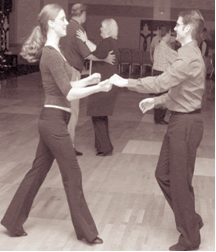
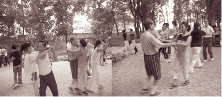
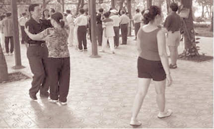
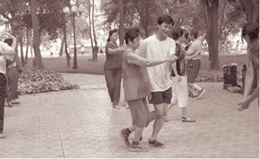

Chưa muốn xếp vào hàng già lão, nhưng vui chơi với đám trẻ thì đã thấy lạc điệu, dù tình vẫn đầy nhưng sức đã vơi, không chủ tâm mà cứ thấy mình đang níu kéo thảng thốt. Tôi đã gặp rất nhiều người mang tâm trạng ấy đi tìm một "liều thuốc an thần" ở sàn nhảy của những mái tóc điểm sương.(VN)
1) Lời phát biểu chân thành
"Thà tôi chết trên sàn nhảy còn hơn chết trên giường bệnh". Bác sĩ Hoàng Minh, 68 tuổi, một trong những chuyên gia giải phẩu dạ dày và đường ruột ở bệnh viện San Jose, đã phát biểu hết sức chân thành với người tỏ ý lo ngại khi ông liên tục nhảy tất cả các điệu trong hai tiếng đồng hồ, kể cả valse mà thanh niên cũng còn thấy chóng mặt. Dù ý thức hay vô thức, những người đến với "sàn nhảy điểm sương" đều muốn cưỡng lại quyền lực vô biên và khắc nghiệt của thời gian, bằng cách chứng tỏ sự trẻ trung. Trẻ trung cả về tinh thần lẫn thể chất. Mong muốn đầy tích cực ấy trong nhiều trường hợp giống như một sự tự khích lệ.
Đến sàn nhảy phải ăn mặc sao cho thích hợp, nam bỏ áo trong quần, nữ mặc váy mang giày là chuyện dĩ nhiên, lại phải chút phấn lên mặt, tí nước hoa vào người, chưa kể đến sự mặc váy thì phải tập luyện nếu cái eo đã lỡ sồ ra quá khổ… Tất cả những sự chuẩn bị ấy làm người ta trẻ ra và đẹp lên. Phải bước đúng nhịp, xương khô người cứng ban đầu cũng chật vật lắm, nhưng đến khi quen đâm ra dễ chịu và phấn chấn: nhạc làm tâm hồn thư thái, vận động thường xuyên luyện phản xạ nhanh nhạy; khiêu vũ thành ra như tập thể dục mà lại thú vị hơn vì có sự kích thích bởi sự cọ sát liên tục giữa hai thân thể. Quan trọng hơn nữa bước vào "sàn nhảy điểm sương" rồi thì như ở chổ toàn "quân ta", không mặc cảm không ngại ngùng, thoảng có thanh niên xuất hiện thì "quân điểm sương" đưa mắt nhìn rất bao dung và bình thản, làm cho chính tuổi trẻ lại thấy lúng túng. Nguyên tắc đơn giản là: không thoải mái thì không nhảy được. Cho nên, phải quên hết - lời khuyên của các vị ở "sàn nhảy điểm sương" là như thế - quên hết buồn phiền lo nghĩ, tai nghe nhạc chân bước theo, tập trung để khỏi giẫm vào chân bạn nhảy.
Nhu cầu ăn ngon mặc đẹp của tuổi già không bức bách như lúc trẻ, cần vui là chính, mà có gì vui bằng bỏ ra vài đồng đô la cho sinh hoạt mỗi tháng, ngày ngày vài ba tiếng đồng hồ liền được hồi tưởng, được trẻ trung, được quên câu nói hỗn của đứa con dâu đã có một nếp sống Mỹ hoá chiều hôm qua, quên sự khó chịu của cái lưng đau, cái mắt mỏi… Nói gì đến chuyện khiêu vũ cần có cặp có đôi, sự lạc lõng cô độc cũng giảm đi ít nhiều khi người sát người, tay cầm tay, nâng đỡ và đồng điệu.
2) Những sàn nhảy "điểm sương" vùng Bắc Cali
Em TTL thường đưa mẹ bà H TV đến "sàn nhảy điểm sương" của Hội Văn Hoá Việt Nam (St- James Senior Center) tâm sự: Ngày mẹ em mới nghỉ hưu, mấy đứa tụi em cứ phát não ruột vì mẹ em sớm chiều đi ra đi vào, cử chỉ ngơ ngác, ánh mắt âm thầm, như đang trong một cơn hụt hẫng ghê gớm. Một thời gian ngắn sau, đã thấy bà có chân trong đủ các thứ hội: Hội Phụ Nữ, Hội Cao Niên Vùng Vịnh, Lớp Dưỡng Sinh, Câu Lạc Bộ Khiêu Vũ…
Ở thành phố San Jose hầu như có rất nhiều câu lạc bộ khiêu vũ của người bản xứ và của các sắc dân thiểu số. Riêng cộng đồng người Việt cũng đã có dăm ba nơi dạy và tổ chức khiêu vũ cho các vị tóc đã điểm sương, mạnh nhất là Hội Tương Trợ Lạc Việt ở đường Quimby trong khu văn hoá Thánh Đường Tự Do và Hội Văn Hoá Việt Nam ở đường số 3 thuộc dowtown San Jose.
Với Hội Văn Hoá Việt Nam, sàn nhảy ở đây chỉ tập trung vào hai ngày thứ năm và thứ bảy cuối tuần. Thứ năm từ 1 giờ đến 3 giờ chiều và thứ bảy từ 1 giờ đến 2 giờ chiều. Ở Hội Tương Trợ Lạc Việt giờ giấc có rộng hơn, mỗi tuần các mái tóc điểm sương được gặp nhau "nhảy nhót" nhiều giờ vào những ngày thứ bảy và chủ nhật. Cả hai nơi đều đáng cho các cụ đến trau giồi "nghệ thuật khiêu vũ" vì sàn nhảy rộng, bài bản, các cụ đi điêu luyện lả lướt như thanh niên. Mỗi người tự "nhắm" sẵn cho mình đôi ba bạn nhảy hợp ý vì càng thân càng dễ gần. Hạn chế gọi "chú", "bác", không đi sâu vào gia cảnh, không hỏi tuổi. Tâm lý chung ai cũng muốn được "thoả chí" ở một chổ không ai biết mình. Nhiều vị "trốn" con cháu mà đi. Cũng có vị nhờ con cháu đưa, rước hoặc xe chở người già (outreach) chuyển đến. Nhiều vị đến cả cặp, vợ chồng nhảy với nhau, chán thì mời người khác. Hết mỗi điệu, nhún chân nghiêng mình chào nhau rất lịch thiệp.
Bà Nancy Huân Lê, người sáng lập và cũng là người quản lý sàn nhảy ở Hội Văn Hoá Việt Nam cho biết: "sàn nhảy của bà đã được thành lập trên chục năm, là điểm tự do, thoái mái cho các cụ. Sàn nhảy là một cái phòng rộng được trang trí rất đơn giản, không dán bảng nội quy to đùng trên tường, không can thiệp những mối giao lưu ngoài khiêu vũ. Hầu hết các cụ đến với sàn nhảy ở Hội này đều tỏ vẻ thích thú những bản nhạc rất là Việt Nam vì có những điệu nhạc êm dịu giống như nhạc Pháp và thường là nhạc tua (tours) như ở các vũ trường tư nhân, nên tránh được sự nhàm chán về thể điệu. Người đến với sàn nhảy của Hội phải là 55 tuổi trở lên. Không riêng cho các cụ Việt Nam, các cụ già của sắc tộc khác cũng có thể đến tham gia. Có nơi ăn và uống cho các cụ trước khi khiêu vũ".
Có thể gặp ông M ở Hội tương tế Việt Nam, bà T chủ nhà hàng, bác Q ở chợ Senter food… Rất nhiều cụ sống cô độc một thân một mình. Sàn nhảy mang lại cho họ niềm vui, dù chỉ trong vài tiếng đồng hồ, nhưng quý giá.
Nhiều người nhìn "sàn nhảy điểm sương" hoài nghi. Và cũng vì thế, có ít người ở "sàn nhảy điểm sương" được hỏi đã xua tay mỉm cười lảng sang chuyện khác khi nói đến gia cảnh: "Đừng đưa tên tôi ra, người không hiểu họ lại bảo trống bỏi, nạ dòng, nhố nhăng…" Nhưng đối với nhạc sĩ lão thành Trịnh Văn Ngân thì có khác, không những ông không mắc mớ về "vấn đề gia cảnh" mà lại còn tích cực hăng say cổ vũ cho việc khiêu vũ của các "mái tóc điểm sương" vì ông quan niệm: khiêu vũ sẽ làm cho người già vui lên và tạo cho người già tránh bớt những ưu phiền, bệnh tật. Khiêu vũ sẽ làm cho người già trẻ lại tâm hồn.
Nhảy hay nhảy dở đâu cần
Hay nhảy, quý cũng ngang gần nhảy hay
Trời cho sống đến tuổi này
Dại gì bất động nhìn ngày tháng trôi
Tuổi nào cũng có cái vui
Tại mình không biết đấy thôi mới già
Saint James đâu phải hội già
Còn thích lả lướt nghĩa là còn xuân
Nếu già đâu dẻo đâu gân
Đâu khoái bay bướm đâu cần nhảy hay
Ngoài kia thiên hạ tuổi này
Đều chống gậy đứng nhìn ngày tháng trôi
Saint James hội trẻ hội vui
Cụ nào không biết đến chơi mới già
(Trịnh Văn Ngân)
Được biết nhạc sĩ Trịnh Văn Ngân là tác giả của nhiều bản nhạc nổi tiếng thời tiền chiến, trong đó có bản "Chiến sĩ của lòng em" đã đưa tên tuổi ông sáng chói trên làng âm nhạc Việt Nam. Năm nay ông đã 88 tuổi, còn tỉnh táo tráng kiện, hiện là thành viên thường trực "sàn nhảy điểm sương" của Hội Văn Hoá Việt Nam.
Trong dãy ghế chờ đợi sàn nhảy số 6 của Hội Văn Hoá Việt Nam, bà Bông ngụ ở thành phố Milpitas, da dẻ nhăn rồi nhưng tinh thần còn trẻ lắm, đang cười nói như thách thức với người đàn ông trạc tuổi thất tuần: "Ông mà mấy năm hơi lên "sàn" tôi lả lướt vài điệu thì thở dốc ngay! Đừng nói chi đến lên "giàn". Người đàn ông chậm rãi trả lời:
- Bà tưởng bà ngon hả? Bà chưa nghe danh Năm Hổ này hả? Từ cha sanh mẹ đẻ tới giờ Năm Hổ này chưa thua ai "vấn đề" đó à nghen! Ngon thử làm coi, tôi mà lên "điệu tay quơ đốp" (pasodoble) thì bà chỉ có chết ấy thôi. Sau phút đối thoại "dò dẫm thử sức" hai cụ dìu nhau ra sàn nhảy.
Bà Thanh Lệ, với dáng vóc nho nhỏ gọn trong bộ đồ đầm kiểu Mỹ, đang lả lướt với một partner theo điệu nhạc "valse lente", cho biết bà đã đi nhảy tập thể kiểu này đã được 4 năm, và rất thích thú khi được đi nhảy vì nơi sàn nhảy được gặp nhiều bạn bè cùng tuổi, hoặc hơn vài tuổi để cùng tâm sự, cùng vui trong tuổi già. Mặt khác cũng tạo cho cơ thể được nhanh nhẹn. Bà nhảy được rất nhiều điệu nhạc với cùng nhiều partner khác nhau kể cả những partner là người nước ngoài. Nhìn bà Thanh Lệ trên sàn nhảy, người viết bài này không khỏi bâng khuâng. Có lẽ ở cái thuở ngày xưa chưa xa xôi lắm, bà Thanh Lệ với thân hình "mi nhon" gợi cảm chắc đã khiến cho bao đấng "mày râu" phải vì nàng mà mần rất nhiều thơ. Nay tuy bị thời gian khống chế tuổi xuân nhưng các partner nhảy cùng bà vẫn phải khen thầm bà còn dẻo còn dai lắm lắm!
Cụ Cương, người được bà quản lý Nancy Huân Lê giới thiệu như là một nhân vật đã có mặt đầu tiên và gắn bó nhất với sàn nhảy đã quan niệm: "Khiêu vũ là một phương tiện để cho mọi người giải trí và tập thể dục, nhất là tập thể dục với người mà mình thân thương. Khiêu vũ có những bước nhảy, hoà cùng nhạc làm cho tinh thần người ta cân bằng hơn và luôn luôn giữ một cái thế yên tĩnh trong tâm hồn, bỏ qua tất cả những gì bên ngoài khi ở trên sàn nhảy".
Khi đề cập đến việc người lớn tuổi có nên hay không đến những sàn nhảy? Cụ Cương khẳng định là nên cổ vũ. Bởi vì khi nhảy đầm là để tập luyện thân thể, nhảy đầm còn ôn lại trí nhớ. Người già nếu trí não không làm việc sẽ mờ đi. Nhảy đầm trí óc, tay chân đều hoạt động đồng nhịp.
Ông Thinh, bạn vong niên của tôi sinh hoạt ở Hội Tương Trợ Lạc Việt lâu năm, nhưng không hề nhảy đầm, một bữa gặp tôi ông cười bảo: "Cô bạn của tao rủ tao đi khiêu vũ, nghe nói hay lắm, mày thấy sao?". Không biết ai "thấy sao" chứ tôi "thấy được". Nhiều buổi liền ngồi ở các sàn nhảy tuổi điểm sương, ngắm những đôi chân đã đi gần hết đời người giờ bỗng vụng về một cách hồn nhiên trong điệu nhạc da diết du dương, chợt thấy cuộc đời bỗng dưng lắng lại và dễ thương chi lạ… Đúng rồi, ở đây không được nói đến chuyện tuổi tác. Để những người như ông Thinh, người bạn vong niên của tôi lại thấy cuộc đời còn dài phía trước, như vẫn ở những bước bắt đầu.
3) Những bóng đen của "sàn nhảy điểm sương"
Ngoài những mái đầu đã chốm bạc là thành viên thường trực của "sàn nhảy điểm sương". Họ đến khiêu vũ với mục đích luyện tập thân thể, trau giồi nghệ thuật, giải trí lành mạnh trên, theo sự hiểu biết của tôi: còn có nhiều đấng "tu mi nam tử" và các vị nữ lưu với tấm thân "bồ tượng" cũng đã đến "sàn nhảy điểm sương" tìm phút giải khuây tâm hồn bên điệu nhạc và những bước đi, nhưng thực sự chủ đích là để "lắc" cho tan đi phần nào lớp mỡ vốn đã lâu năm thường trú ở vùng eo, bụng và đùi. Có các vị nữ lưu dáng vẻ như là "mệnh phụ phu nhân", chưa từng quen cùng sương gió, cũng thủ đắc một điệu nhảy cùng với những partner xem ra đáng tuổi con của họ trên sàn nhảy. Dù "sàn nhảy điểm sương" chỉ dành riêng cho các cụ, nhưng vẫn có thấy nhiều "mái đầu xanh" loan lẫn tích cực sinh hoạt. Cô Ánh là nhân viên công ty điện tử ở Sunnyvale, vừa ly dị chồng hai tháng tâm sự với người viết bài này tại sàn nhảy những người cao niên như sau:
"Em mê nhảy đầm hơn mê chồng em. Em đi làm ở hãng nhưng cứ trông đến cuối tuần để được đi nhảy đầm. Chồng em "cù lần" lắm. Năm ngoái em bảo cùng học nhảy đầm với em, anh ấy nói: Nhảy đầm, nhảy điếc gì! Lo mần ăn không lo cứ lo nhảy đầm. Cãi cọ miết rồi ly dị. Bây giờ em đã tự do. Anh vào "sàn" với em đi?"
Ông Xui, nhà ở gần vườn Nhật San Jose, tuổi đã ngoài lục tuần nhờ siêng năng đến "sàn nhảy điểm sương" nên đã "vớt" được một "nụ đào tơ" thơm phức vừa trẻ trung vừa xinh đẹp nên lòng lúc nào cũng thấy phơi phới. Mặc dù hết sức giữ gìn, nhưng những thay đổi ở ông khó lọt qua cặp mắt đầy cảnh giác của bà vợ già. Những cuộc trò chuyện ấp úng qua điện thoại. Những buổi tối đi "công chuyện" bất thường. Tính chăm ủi quần áo đột xuất. Số lần tắm rửa, đánh răng trong ngày tăng vọt… Chỉ có điều chưa túm được quả tang nên bà đành chịu ngậm bồ hòn mai phục trường kỳ. Một sáng chủ nhật ngồi nhà rỗi rãnh, ông đem đồ nghề ra tỉa râu. Nuôi được bộ râu đẹp tốn rất nhiều công phu. Hiềm nỗi ở tuổi ông bây giờ, râu ria cũng sợi đen chen sợi bạc. Tình trạng lẫn lộn trắng đen ấy phô ra ngay trên mặt, khiến ông vô cùng phiền lòng. Tóc bạc còn nhuộm được, chứ râu bạc chỉ có nước… cạo đi mà thôi! Quá mải mê với việc làm đẹp, ông không hề hay biết bà vợ đã lẻn đến sau lưng từ lúc nào.
- Người già thì cái râu, cái tóc cũng phải già theo. Ông cứ ra sức chống lại ý trời là cớ làm sao?
Ông Xui lạnh toát người, song vẫn cố giữ vẻ bình tĩnh:
- Cái râu, cái tóc của người cũng giống như cái hoa, cái lá của cây. Hoa nở rồi hoa tàn, lá già rồi lá úa, lá rụng. Cái râu của tôi úa không rụng được thì tôi bứt giùm nó - Nói đến đây, ông Xui chợt nảy ra một ý so sánh thú vị, ông cười hề hề- Cũng giống như người ta bứt lá mai để Tết đến mai nở hoa đó bà!
Bà vợ lừ mắt:
- Bứt lá mai để mai nở hoa đón Xuân. Bứt râu ông để ông… đón ai?
Ông Xui suýt cứng lưỡi, nhưng vẫn nhanh trí tìm ra cách khống chế: Đời con người cũng có… hai mùa Xuân chớ bộ! Thời trẻ coi như mùa Xuân đầu. Bây giờ tôi bứt râu, nhuộm tóc để đón mùa Xuân thứ hai…
Vì chỗ thâm tình, ông Xui đã kể câu chuyện này cho người viết nghe lúc ông đang chuẩn bị vào sàn nhảy.
Người đàn bà với cách ăn mặc theo kiểu "club bar Mẽo" đang cặp tay nhảy điệu "tango" với một người đàn ông lớn tuổi trên "sàn nhảy điểm sương" tại Santa Clara. Khi nghe thấy có nhà báo đến chụp hình thì vội vã buông người đàn ông ra và nhanh chân lãng khỏi sàn nhảy, trước bao nhiêu cặp mắt tò mò của mọi người. Không để lỡ cơ hội ký giả Kiến Nâu của Tuần Báo Đời Mới San Jose đã bám sát mục tiêu để truy tầm nguyên cớ. Được biết "cô" tên là Lợi, 40 tuổi, nhà gần khu vực sàn nhảy, tranh thủ lúc chồng vắng nhà đến sàn nhảy tìm nguồn "cảm hứng" cùng gã đàn ông tài phiệt trong vùng. Với thái độ thành khẩn, van nài cô nói với nhà báo: "Anh có chụp hình của em, cho em xin đi, đừng đăng hình em trên báo nhé!" Nhưng sau câu van nài đó là lời hăm doạ:
"Tôi mà thấy hình tôi trên mặt báo là anh biết tay tôi. Tôi không tha anh đâu! Tôi sẽ "chơi anh" tới cùng. Ký giả Kiến Nâu chưa kịp lấy lại "thăng bằng" sau lời hăm doạ có vẻ quyết liệt của người đàn bà, chỉ còn biết dõi mắt nhìn theo dáng đi "uốn éo" cùng với thân hình "vệ nữ" bước gọn trên chiếc xe BMW đời 2004 ra khỏi khu vực sàn nhảy.
4) Khiêu vũ không chỉ giới hạn trên sàn nhảy
Khiêu vũ trên sàn nhảy, vẫn được duy trì và việc nhảy trên sàn nhảy, cũng tạo con người tham dự có được sự thanh tao về phong cách, nhưng khi gia nhập vào những Club thường phải tham gia vào với tiền lệ phí khá cao, nên những người có đời sống khiêm nhượng về kinh tế sẽ không thể duy trì lâu được sở thích của mình về bộ môn này. Cho nên gần đây, không những ở các nước tiên tiến có sinh ra một loại hình khiêu vũ theo kiểu tập thể ở những nơi công cộng. Nhưng kiểu khiêu vũ loại này cũng không mấy được người tây phương tham gia, mặc dù kiểu khiêu vũ như vầy phát nguồn từ họ. Loại khiêu vũ kiểu công cộng gần đây đã lấn át hẳn kiểu khiểu vũ trong Club, và thịnh hành ở các nước Á Châu, đặc biệt là Việt Nam.
Ký giả Hoàng Đại Dương của tờ báo Điện tử Việt Nam Net đã diễn tả lại sự "xuống đường khiêu vũ" rầm rộ của các ông bà già giữa các công viên trong các thành phố lớn của Việt Nam như sau:
"Sáng nào cũng vậy, khi bình minh đang lên, ngay giữa công viên Thống Nhất ở trung tâm Thủ đô, có thể thấy hàng chục nhóm đông đảo các ông bà già hồn nhiên trong những bộ quần áo cộc, dìu nhau say sưa tập các bước nhảy ngượng nghịu đầu tiên trong đời. Quan sát và suy nghĩ, ta có thể cùng nhau chia sẻ được khá nhiều điều lý thú từ một hiện tượng có vẻ rất bình thường nhưng lại mang theo những tín hiệu tiềm ẩn của một xã hội đang từng ngày đổi thay.
Con người ta thật ra rất dễ quên các thói quen cũ và có thể thay đổi tập tục, thay đổi cách sống nhanh hơn người ta vẫn tưởng. Xin hãy hình dung, nếu cách đây chưa xa, như thể vào khoảng các năm 1980 mà có ai đó ở tuổi 60 ôm eo nhau nhún nhảy trong nhà hoặc trong cơ quan thì chắc hẳn mọi người phải nghĩ ngay đây là những người bị tâm thần hoặc một sự khiêu khích ghê gớm đối với thuần phong mỹ tục cao quý của dân tộc. Mọi người sẽ tức tối, con cái sẽ phản đối và chính quyền sẽ phải tìm biện pháp xử lý cấp thời.
Thế nhưng quay đi quay lại một thời gian thôi, bây giờ phường nào cũng có đến ba bốn nhà có lớp học nhảy tưng bừng, toàn là các cụ cỡ 60 trở lên, sôi nổi hơn cả họp chi đoàn thanh niên nhiều. Học và nhảy ở nhà chưa đã, các cụ rủ nhau ra công viên Thống Nhất mà nhảy cho nó rộng chân rộng cẳng, nhiều đối tác phong phú hơn, và nhiều không khí hội hè hơn. Mà toàn là tự phát tự túc.
5 giờ sáng ra khỏi giường. 5 giờ 30, cụ thì trèo ra ban công cắm ổ điện, vứt mấy trăm thước dây qua bờ rào cho mấy cụ đã chờ sẵn trong công viên dòng vòng vèo ra đến tận một khúc sàn đá hoa nào đó. Cụ thì chất loa đài cồng kềnh lên Honda phi thẳng ra khu đất đã xí sẵn cho nhóm dancing của mình. Các bác gác cổng công viên khó tính đến mấy cũng phải chạy ra mở cổng sắt cho Honda các cụ phi thẳng vào, mặc dù nội quy công viên là dứt khoát cấm xe máy. Chẳng ai nỡ làm khó các cụ, toàn vào tuổi bố mẹ mình, vả lại nhiều cụ xưa kia có chức có quyền, bây giờ đụng vào các cụ giở lý sự ra mệt lắm.
Loa kê ngay trên sàn đá, dây phích cắm vào, nhạc lên oang oang vang xa hàng nửa cây số. Ai đến sớm nhảy sớm, đến muộn nhảy muộn, người nào có đôi thì đợi nhau, chưa có thì cứ tiện ai là mời. Điệu này thì cụ bà nhảy với thanh niên, cụ ông nhảy cùng thiếu nữ, điệu khác thì các cụ với nhau, chúng cháu với nhau. Hồn nhiên hết cỡ. Nhóm thì có "vũ sư" nghiêm chỉnh, micro gài bên mép, vừa nhảy mẫu vừa đếm một-hai-ba. Có nhóm thì tự dạy lẫn nhau, vừa nhảy vừa giằng co, dẫm vào chân nhau là chuyện thường.
a) Nhìn người ta mà học.
Thỉnh thoảng lại thấy mấy anh chị tây bụi, ba lô trĩu vai, mặt còn chưa hết ngái ngủ, đứng xem các cụ một lúc rồi kéo nhau đi. Hỏi ra thì trong khách du lịch, tây họ bảo nhau rằng ai đi tàu đêm từ Sa Pa về ga Hàng Cỏ vào lúc sáng sớm thì nên tranh thủ rẽ ra công viên Thống Nhất mà xem người Việt Nam tập thể dục và nhảy đầm. Rất hay, nên xem. Tây vốn hay lịch sự, xem nhưng không nói gì, hỏi mãi mới bảo rằng rất kỳ cục và rất nên đi mà xem. Mấy chục năm trước bố mẹ họ cũng hay nhảy các điệu này, nhưng mặc quần đùi nhảy giữa công viên thế này thì chưa thấy bao giờ.
Thế đấy, nhảy đầm vốn là cũ người mới ta, thì đi xem nhảy đầm bây giờ lại là cũ ta nhưng mới người. Nhưng cũng đáng khen cho mấy anh chị tây ba lô rất giỏi đi lọ mọ và bắn tin cho nhau rất nhanh. Còn ngay người Việt ta, cũng rất nhiều người không hề biết rằng ngay giữa công viên Thủ đô, sáng nào cũng có rất nhiều các cụ già nhảy đầm.
Chưa thấy ai tìm hiểu chính xác xem các nhóm tập nhảy đầm đầu tiên xuất hiện ở công viên xuất hiện khi nào. Nhưng chắc chắn là từ mươi mười lăm năm trước, khi ở Việt Nam phong trào khiêu vũ chưa hồi sinh thì đã thấy trên truyền hình phát đi hình ảnh các cụ già Trung Hoa dìu nhau tập nhảy ngay trên quảng trường Thiên An Môn. Trời rét căm căm, quần bông áo bông dày xụ, máy cassette để trên mặt đường và hàng trăm cụ xoãi chân vươn mình theo nhạc boston. Khi ấy xem truyền hình, không hiểu có ai có thể nghĩ rằng mươi năm sau, ở Việt Nam cũng lại y như thế. Và hình như cứ chậm đi một khoảng mươi năm gì đấy, là các hiện tượng ở ta lại thấy giống giống ở bên Trung Hoa. Mới năm nào bên ấy có nạn trẻ em béo phì, bây giờ ở ta đã thấy bệnh này bắt đầu phát triển, rồi báo chí nói nhiều đến bùng nổ ly hôn ở thanh niên Bắc Kinh thì vài năm sau, trai gái Hà Nội đã thấy việc ly hôn của họ cũng là sự thường tình. Tuy nhiên có một điều có thể nhận ra là, các cụ già Trung Quốc tập nhảy có vẻ có bài bản hơn. Các bước đi dù vẫn vụng về nhưng là các bước đúng cơ bản, từ thân pháp, tư thế cho đến cách đặt và lướt bàn chân trên mặt đất. Người tinh ý có thể nhận ra là người huấn luyện viên của họ ít ra thì cũng có qua trường lớp tối thiểu. Còn ở Hà Nội, hầu hết các ông cụ tự xưng "vũ sư" cũng đa số là đi học lỏm của các cụ khác cũng vừa mới theo một lớp tập nhảy của một cụ khác nữa, cũng là dân nhảy tự biên tự diễn.
Lần theo đầu mối cho đến những thầy dạy nhảy từ ngày phong trào mới hồi sinh vào đầu những năm 1990 thì các vị vũ sư đầu tiên này khi xưa là các chàng thanh niên đã được thi thoảng ghé qua nhảy chơi chơi trong các buổi vũ hội của câu lạc bộ quốc tế hoặc xem qua các bộ phim Pháp hồi giữa thế kỷ 20. Vài ba cụ có năng khiếu còn đủ nhớ lại các bước cơ bản thì nghiễm nhiên trở thành vũ sư của các câu lạc bộ khiêu vũ đầu tiên như Hàng Buồm, Giảng Võ, Chí Linh. Ngoài ra còn mấy vị vốn là diễn viên cũ của các đoàn văn công, quay ra luyện chân chút chút rồi có người tìm đến xin học. Khá nhất là có mấy người đã học qua một hai khoá nhảy cấp tốc bên Đông Âu, về mở lớp dạy theo cung cách của các đôi nhảy thi quốc tế phát trên truyền hình, biến chế đi cho đơn giản hơn và mang ra dạy. Thế là dần dần thành các trường phái. Nhiều khi các thầy như thầy bói xem voi, biết một mà không biết hai ba. Đến khi ra sàn thấy người khác nhảy không giống mình là một mặt lên giọng chê bai nhưng vẫn ngầm xem để học lỏm về làm thành chiêu mới của mình.
Vì cứ tự mày mò, cơm chấm cơm như thế, cho nên cuối cùng ai ai cũng có thể trở thành vũ sư. Từ đó dẫn đến một não trạng là khi nhảy waltz vốn mang phong cách kiêu hãnh của quý tộc châu Âu các vị cũng ngoáy mông vẹo lưng như khi nhảy rumba theo tâm hồn Mỹ latin hồn nhiên bốc lửa, giống như tập nói tiếng Pháp mà cứ phát âm nổ bôm bốp như tiếng Anh của người Ấn Độ, lộn xộn ngọng nghịu hết cả. Ấy thế nhưng mà vẫn nói liến thoắng bởi vì cái người đã nói ngọng thì có bao giờ biết là mình nói ngọng đâu. Nếu biết thì đã chả có ai nói ngọng. Đặc biệt là dáng người thì mười người nhảy có đến chín người gù lưng, óp bụng, chân cẳng ngượng nghịu như đi dò mìn mà mấy anh tây ba lô gọi là "provincial", tức là tỉnh lẻ hay là quê kệch (xin lỗi, đây là mấy anh chị tây ba lô họ nói vậy thôi ạ, chả buồn chấp họ làm gì).
b) Ông bà ơi, về thôi, muộn rồi.
Đây không phải là căn bệnh riêng của các cụ nhảy đầm. Cách đây chưa lâu, ở Việt Nam chẳng có ai biết thật sự thế nào là Thái Cực quyền. Có vài cụ lõm bõm biết vài chiêu hoa chân múa tay học lỏm đâu đó, bèn tự bịa ra mấy bài quyền rồi trở thành võ sư mở lớp dạy cho không biết là bao nhiêu người. Có cụ còn phao lên rằng nhà mình chân truyền mười mấy đời, có in ra sách hẳn hoi, vẽ cả vòng tròn âm dương dưới sàn để dạy các đường quyền thái cực. Báo chí, truyền hình đã ca ngợi hết lời.
Thế rồi đến khi có mấy ông huấn luyện viên Trung Quốc sang xem, họ phát hiện ra là sai toét cả, sai từ những nguyên tắc tối thiểu nhất của Thái Cực Quyền chính hiệu. Thế là chẳng ai bảo ai, môn phái này tự dưng biến mất tăm. Bây giờ các cụ nhà ta lại quay ra tập các bài quyền giản thế 24 thức do ngành thể thao Trung Hoa quy định. Bài này bây giờ vẫn thấy trong các buổi phát sóng sáng sớm của đài truyền hình Hà Nội và được nhiều người học theo.
Đến bây giờ, thấy thế giới sắp đưa nhảy đầm (được gọi là sport dance) vào chương trình thi Olympic thì mới thấy xưa nay chưa nghiên cứu tổ chức quy củ gì cả. May sao có một hai đôi thanh niên Hà Nội xin tiền bố mẹ tự lần mò sang Pháp học đã mấy năm nay. Thế là thở phào, Hà Nội đã có vận động viên để đi thi rồi. Nếu cứ tuyển các đôi nhảy tự biên tự diễn sẵn có tại các sàn nhảy công cộng thì có lẽ các trọng tài quốc tế cũng phải cúi đầu chào thua.
Hy vọng là từ sau Olympic 2008, người ta sẽ nghĩ đến chuyện học nhảy có đầu có đuôi, và có thể sẽ có các bạn trẻ được đi học nghiêm chỉnh về phổ biến cho các cụ nhà ta. Giống như bây giờ các lớp Anh văn cấp tốc cơm chấm cơm đã hết thời, thay bằng các khoá Apollo tuy không thật quy củ nhưng đã có thầy cô là người gốc nói tiếng Anh, hoặc thầy Việt thì cũng là dân chuyên ngữ. Người ta chỉ còn đi học Anh ngữ cấp tốc để lấy cái bằng rởm cho vào hồ sơ xin tăng lương, lên chức, xin thi thạc sĩ tiến sĩ mà thôi. Mà dân nhảy đầm thì bằng cấp đâu có nghĩa gì, ra sàn mà nhảy ấm ớ thì không ai nhảy cùng.
Tuy vậy, rõ ràng là các cụ ham mê nhảy đầm hiện nay thuộc vào lớp những người cao tuổi có đầu óc đổi mới vào loại nhanh nhất, là những người yêu văn hoá văn nghệ, chú trọng gìn giữ sức khoẻ và yêu đời. Thay vì ngồi bên bàn nước hậm hực nói đi nói lại mãi về các nỗi bức xúc của xã hội, về các lời đồn đại, về tiêu cực bất công mà ai ai cũng biết cả rồi thì bây giờ cùng nhau đi tập nhảy. Hãy cứ vui vẻ khoẻ mạnh, hãy cứ tận hưởng mật ngọt cuộc đời để mà còn sống thật lâu cho đến khi thấy được lũ trẻ đưa đất nước mình mở mặt cùng năm châu bốn biển".
4) Lợi và Hại của việc nhảy đầm
Hiện nay, việc hình thành các "sàn nhảy điểm sương" khá phổ biến trên các quốc gia tân tiến cũng như những quốc gia đang phát triển. Và sự "cổ vũ" hay "bài bác" cũng không ít, nhưng có điều cho thấy là: Khiêu vũ là một nghệ thuật, một môn học được rất nhiều người trên thế giới thích thú và quan tâm. Khiêu vũ đem lại cho người ta thoải mái nhất định trong tâm hồn và còn làm cho thân thể thêm dẻo dai cường tráng, nhanh nhẹn. Với những cụ cao niên, sàn nhảy còn là nơi "giải toả" những nỗi cô đơn của tuổi về chiều, khiêu vũ chừng mực người già sẽ kéo lại được tuổi xuân. Một bác sĩ chuyên lo sức khỏe của các cụ cao niên đã nói: "Diệu dụng của NHẢY chính là hoàn xuân".
Tác giả Phạm Hoàng Hải của bài viết "Nhảy đầm - Lợi gì, Hại gì?" đăng trên báo Điện Tử Việt Nam net, ngày 28-07-2005, thì có nhận định tích cực hơn:
"Đôi khi người ta nghe đồn những câu chuyện lạ tai về một ai đó mê nhảy đầm. Những scandal nghe lỏm trong sàn nhảy được thêm mắm thêm muối đưa ra mặt báo. Thế là người ta ngày càng nghĩ xấu về nhảy đầm. Nhưng thực ra khiêu vũ quốc tế cũng mang lại những lợi ích nhất định cho những người mê nhảy và góp phần xây dựng thái độ văn hoá, quan niệm đạo đức mới của một xã hội đang chuyển mình từng giây từng phút của chúng ta.
Thí dụ như trong giao thông, càng nhiều người ngược xuôi đi lại thì đất nước càng phát triển, càng văn minh và thịnh vượng. Thế nhưng giao thông nhiều thì tai nạn cũng tăng lên. Tai nạn là một phần tất yếu của giao thông. Cũng như scandal là những yếu tố tất yếu tiềm ẩn bên trong mỗi cuộc nhảy đầm. Tai nạn càng nhiều người ta càng phải tìm cách đi lại sao cho an toàn, đặt thêm luật lệ và học cách tự bảo vệ mình. Vì thế xin các bạn đừng quá sợ hãi khi xem các bài viết về các tiêu cực trên sàn nhảy và cũng đừng vì thế mà đâm ra đố kỵ và xem thường những người ham nhảy.
a) Một kiểu váy khiêu vũ.
Một đứa bé cầm tiền ra chợ lúc đầu rất dễ bị mất cắp, bị mẹ mìn lừa gạt. Nếu không cho nó ra chợ thì mãi mãi nó là một đứa khù khờ, nhưng nếu để nó tự tin đi giữa muôn người trong chợ, nó sẽ biết cách phòng tránh những mất mát lớn sau này khi phải ra đời tự lập. Một thiếu nữ đã từng đi nhảy nhiều nhiều, mỗi buổi gặp và nhảy với ba bốn người đàn ông xa lạ thì sẽ vững vàng trước những lời sàm sỡ, những trò lừa mị của Sở Khanh ngoài đời. Hơn hẳn một cô con gái cưng suốt ngày rúc sau lưng mẹ.
Bây giờ, những đôi từ bạn nhảy chuyển sang bạn tình làm tan vỡ gia đình thì bị coi là "ngố" thậm chí là "ngu lâu". Nhảy là nhảy, như đánh cầu lông, như rủ nhau chơi bóng bàn chứ không lầm lẫn mà bỏ cả gia đình hạnh phúc.
Trước kia vào sàn nhảy, việc "buôn dưa lê" về đời tư của người khác là "một phần tất yếu của cuộc sống". Giờ mọi người nhận ra rằng nếu muốn được tự do thì trước hết phải biết tôn trọng tự do của người khác. Cuối cùng những "nha buôn" chuyên nghiệp này cũng thấy vô duyên, họ đã phải tự điều chỉnh cách sống. Vô hình trung, văn minh xã hội trong sàn nhảy được nâng lên một chút.
Trước kia người ta thường thấy cảnh một người đàn ông nào đó quần áo xộc xệch, đầu tóc bù xù xăm xăm ra mời rồi kéo tay năn nỉ một người nữ nào đó, nhiều khi lại còn lầu bầu bực tức khi bị từ chối. Bây giờ ra sàn không một ai lại lố bịch và kém lịch sự như vậy nữa. Từ một người không được chỉ bảo chu đáo về những phép xã giao giao tiếp thông thường, từ một người vốn cả đời coi việc ăn mặc luộm thuộm là bình thường, họ đã trở thành một người biết tôn trọng người khác và tôn trọng chính mình bằng một việc rất đơn giản là áo quần tề chỉnh sạch sẽ, và biết mình cần giới hạn hành vi thế nào ở chỗ công cộng.
Tôi biết một phụ nữ cả đời vất vả vì chồng con, vì miếng cơm manh áo. Khi nghỉ hưu, chị ngồi rũ mình trong nhà với bộ mặt đầy nát những vết chân chim và đủ loại bệnh tiềm ẩn trong người. Thế rồi chị theo bạn ra sàn nhảy. Chị bỗng tìm được niềm vui nho nhỏ trong bộ váy áo mà cả một đời con gái vẫn hằng mơ ước. Chị tìm cách che bớt các nếp nhăn bằng một chút phấn son.
Cả một đời nghèo khó, chị đâu có đủ tinh tế để chọn được bộ váy thật sang, đâu có đủ kinh nghiệm để thoa được lớp phấn mà không hết vụng về. Thế nhưng chị vẫn cố một tuần thu xếp đôi ba buổi đi nhảy. Chẳng bao lâu sau, chị đã như một con người khác, yêu đời, biết cười nói, biết trò chuyện duyên dáng hơn. Đặc biệt chị đỡ hẳn các cơn đau khớp, hạ được huyết áp và giảm béo được mấy cân.
b) "Đụng chạm" chỉ là điểm tựa
Những đụng chạm da thịt chỉ là điểm tựa để bước theo các vũ điệu.
Không phải vô cớ mà cả thế giới người ta gọi nhảy đầm là dance sport. Tôi chắc rằng nếu đi nhảy đều đặn trong vòng ba tháng, đang béo bạn sẽ thon thả hơn, đang gầy sẽ thấy có da có thịt và nhiều bệnh kinh niên sẽ dần dần thuyên giảm. Khi khiêu vũ, bạn được đắm mình trong các bản nhạc sống mãi với thời gian, được sống trong không khí hội hè, nơi tất cả mọi người đến đó để hân hoan vui sướng. Hơn cả thể dục nhịp điệu, các động tác, các bước nhảy của bạn vừa là các bài tập toàn thân vừa là sự sáng tạo, sự thể hiện ngẫu hứng dưới tác động của âm nhạc, trong sự kết hợp ăn ý với người bạn nhảy của mình.
Với những người hiểu biết và đủ thành thạo, khiêu vũ là một thực hành Thiền ở dạng động, khi mà ta có thể buông thả mọi lo âu căng thẳng về tinh thần, mọi co thắt rối loạn về cơ bắp. Ở mức cao, khiêu vũ còn là một dạng luyện tập nhu quyền có lẽ còn hấp dẫn hơn cả Vịnh Xuân hay Thái Cực quyền. Vào những thời điểm tuyệt vời, khiêu vũ còn có thể đưa người ta vào những khoảnh khắc nhập đồng siêu thoát và như thấy mình gần hơn với thần tiên.
Nhảy giỏi, nhảy đẹp và sang trọng luôn là một tiêu chuẩn bắt buộc, một niềm tự hào kiêu hãnh của những người quý tộc châu Âu. Những nét tinh tế cả về văn hoá và tâm hồn của môn nghệ thuật đầy hấp dẫn này đã được đại văn hào Nga là Lev Tolstoi dành trọn trái tim mình để mô tả trong các trang sách của tập tiểu thuyết đồ sộ "Chiến tranh và Hoà bình". Còn với những người da màu Mỹ Latin có tâm hồn bốc lửa thì khiêu vũ có khi còn cần hơn cả cơm ăn áo mặc. Vì thế, trong con mắt của những người La Mã - Hy Lạp cổ đại, Thiên Đàng là nơi mà con người và Thiên Thần suốt ngày khiêu vũ hát ca.
c) Một kiểu giày khiêu vũ.
Người mình vẫn mang những tư tưởng chật hẹp, cho nên khi thấy người đàn ông nắm tay hoặc ôm eo một người phụ nữ thì liền nảy ngay ra ý nghĩ tưởng tượng về dục vọng xấu xa. Thế nhưng ai đã từng đi nhảy vài lần đều nhận thấy rằng khi khiêu vũ họ không nghĩ gì đến việc đụng chạm da thịt, mà chỉ coi đấy là điểm tựa để đưa hoặc để bước theo trong các vũ điệu mà thôi.
Từ xưa đến nay, nhảy đầm vốn làm cả thế giới ta mê say, còn bây giờ cái say ấy đang bắt đầu ngấm vào Việt Nam. Tuy nhiên sẽ còn cả một chặng đường dài để cho đến khi khiêu vũ trở thành một nếp sống, một sinh hoạt văn hoá hàng ngày. Và, sẽ còn nhiều thăng trầm cho đến khi một nền tảng văn hoá khiêu vũ được dần dần hình thành qua trải nghiệm để rồi có thể định hình trong xã hội chúng ta. Và cũng không có gì lạ, là cùng với hàng ngàn người đi nhảy mỗi ngày, luôn sẽ có trong đó những kẻ lạm dụng, những Sở Khanh, những Hoạn Thư, những kẻ la cà rách việc và cả những va vấp nhiều khi đau đớn… Người mê nhảy buộc phải tập cách sống chung và phải có đủ bản lĩnh, có đủ văn hoá để miễn dịch và tự bảo vệ mình".
Tóm lại nhảy đầm là một nghệ thuật cần phát huy, nhưng thái độ của mỗi người cần hiểu rằng: mình là mục tiêu dễ bị dư luận lên án. Cho nên mỗi người tham gia vào việc nhảy đầm cần có sự am hiểu và nên kềm chế mặt tiêu cực để luôn cùng nhau giữ mãi và phát triển phổ thông môn nghệ thuật lành mạnh này.




Một cảnh khiêu vũ ngoài công viên ở Việt Nam & trong vũ trường ở các nước Tây Phương